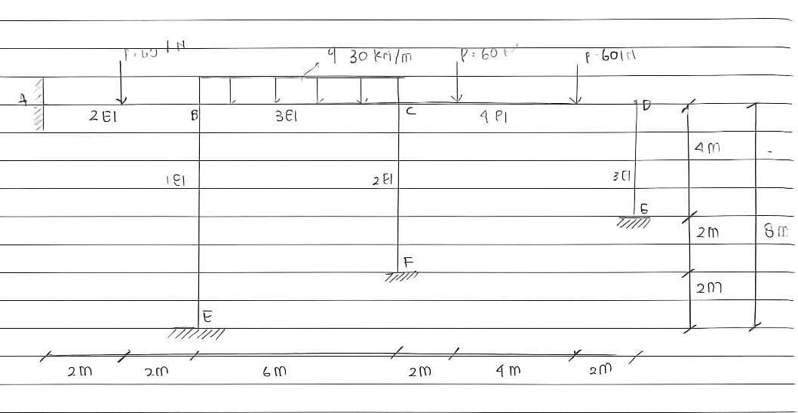

Materi ini membahas analisis struktur portal tidak bergoyang dengan metode distribusi momen Cross, mulai dari konsep dasar, langkah perhitungan, hingga hasil analisis berupa momen, gaya lintang, dan gaya normal.

Portal tidak bergoyang adalah struktur rangka dua dimensi yang bekerja pada bidang x-y dan tidak mengalami perpindahan lateral. Struktur ini terdiri atas balok dan kolom yang saling terhubung dan menahan beban secara bersama.
Dalam analisis struktur, kondisi tidak bergoyang berarti simpangan horizontal pada portal dianggap tidak terjadi. Karena itu, perhitungan dapat difokuskan pada distribusi momen, kekakuan batang, dan keseimbangan gaya pada simpul.
Metode Distribusi Momen Cross adalah salah satu metode analisis struktur statis tak tentu yang digunakan untuk menghitung momen ujung batang pada balok dan portal. Metode ini bekerja dengan cara mendistribusikan momen pada setiap simpul sampai tercapai kondisi seimbang.
Metode ini banyak digunakan karena sistematis, mudah diterapkan pada perhitungan manual, dan membantu mahasiswa memahami hubungan antara kekakuan elemen, pembagian momen, dan respon akhir struktur.
Pada tahap awal, setiap batang dalam portal dianalisis berdasarkan kekakuannya. Nilai kekakuan dipengaruhi oleh modulus elastisitas, momen inersia, dan panjang elemen. Jika mutu material dianggap sama, maka perbedaan kekakuan umumnya ditentukan oleh bentuk dan ukuran penampang.
Dari proses analisis, diperoleh momen ujung batang akhir yang sudah seimbang pada tiap simpul. Nilai ini kemudian digunakan untuk menghitung reaksi tumpuan dan menyusun diagram gaya dalam.
Tiga hasil utama yang biasanya ditampilkan adalah bidang momen lentur, bidang gaya lintang, dan bidang gaya normal. Ketiga diagram ini menunjukkan bagaimana struktur merespons beban dan membantu dalam evaluasi kekuatan elemen portal.
Materi ini membantu mahasiswa teknik sipil memahami cara kerja portal tidak bergoyang secara lebih terstruktur. Pembahasan tidak hanya berhenti pada teori, tetapi juga menunjukkan penerapan langsung melalui contoh soal dan tabel distribusi momen.
Dengan memahami metode ini, mahasiswa dapat lebih mudah menganalisis struktur portal sederhana, memeriksa hasil perhitungan, dan menyiapkan dasar untuk mempelajari metode analisis struktur yang lebih lanjut.
Metode Distribusi Momen Cross merupakan metode penting dalam analisis portal tidak bergoyang. Metode ini digunakan untuk menentukan pembagian momen pada simpul berdasarkan kekakuan batang yang saling terhubung.
Melalui tahapan yang runtut, mulai dari faktor kekakuan hingga penyusunan diagram gaya dalam, metode ini memberi pemahaman yang kuat tentang perilaku struktur portal. Karena itu, materi ini sangat relevan dalam pembelajaran analisis struktur di teknik sipil.